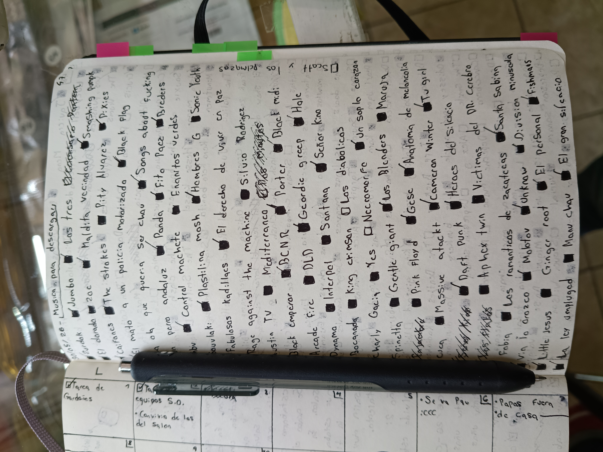

VOLVI. despues de como dos meses sin actualizar esta basura, estoy de vuelta. paso un monton de mierda en este tiempo, pero en resumen: mayo fue un mes muy bueno y la escuela la chupa.
supongo que podria hablar de muchas cosas, pero para no irme por las ramas, simplemente hablare de algo que me incumbe el dia de hoy: le declare la guerra a spotify.
ya van varias ocaciones en las que estoy fuera, y intento escuchar la musica que tengo descargada en la aplicacion, pero cuando entro, resulta que toda mi musica no esta descargada.
al principio fue tolerable, volvia a descargar lo importante y asi, pero ya ha pasado tantas veces que me acabe resignando, por lo que decidi SER UN HOMBRE y descargar mi propia musica.
asi que eso, toda esta ultima semana he estado descargando gigas de musica, y etiquetandolas como es debido. agradecimientos especiales a soulseek por ser el mejor amigo del ñuño y a mi libreta por alojar todo el monton de basura que tengo que descargar.

prohibido escuchar musica buena.y eso.
ya estoy de vacaciones, y entre hundirme en mi propia miseria y actualizar esta pagina, prefiero la segunda.
saludos a pau y a saul y a samantha y a alan y a mi mama y a mi papa y a omar y a